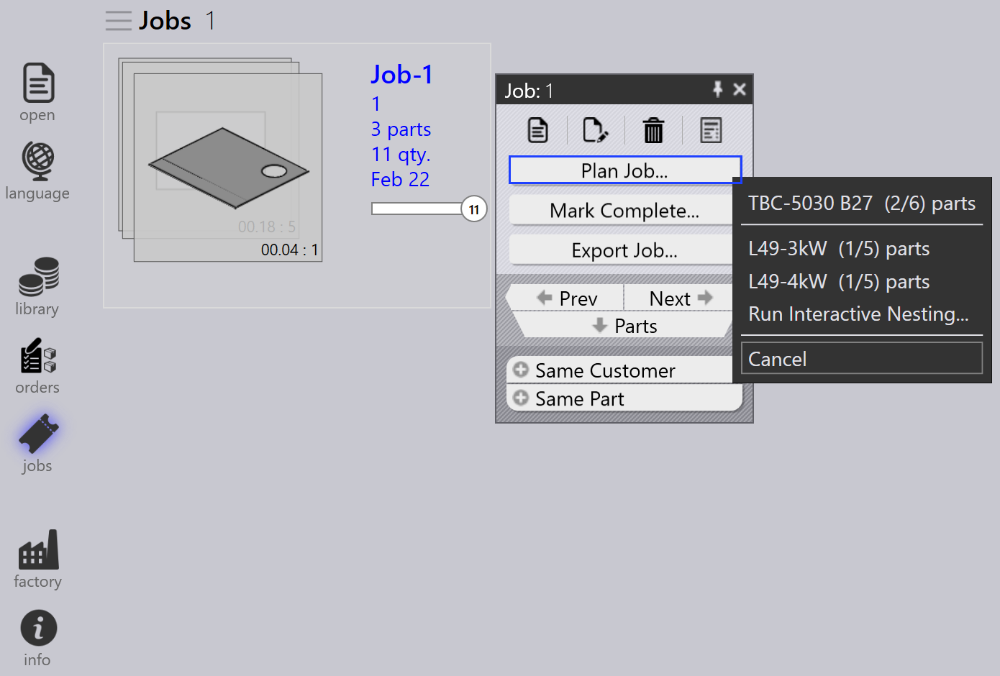
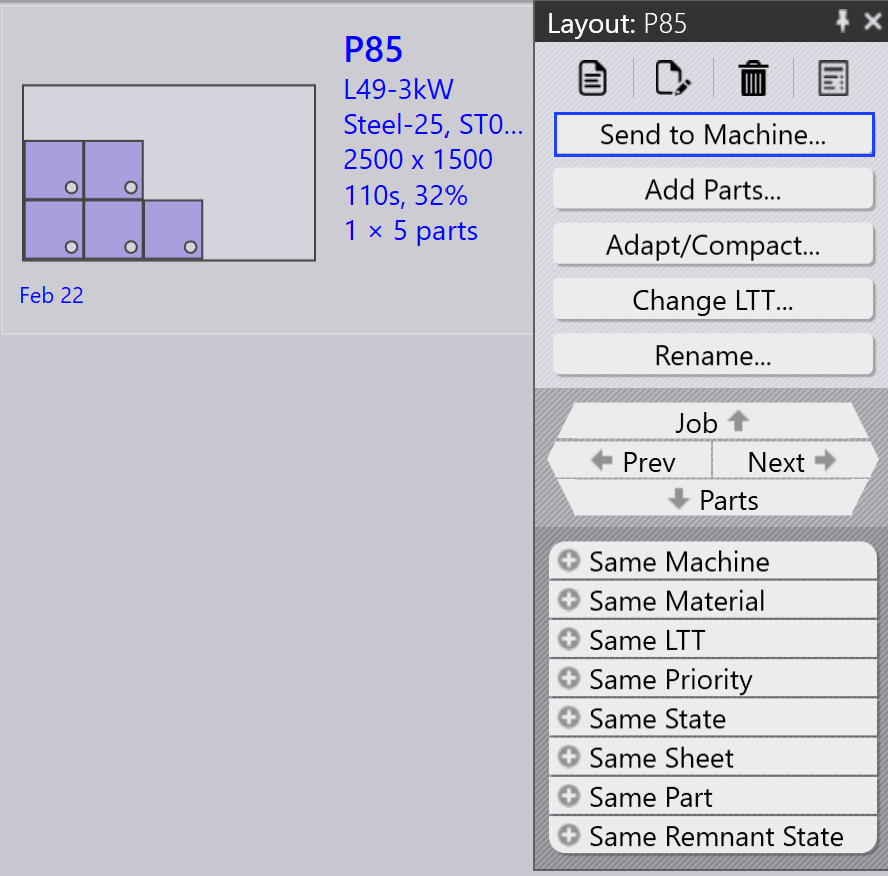

Työnkulku
TruSmartCAM on tuotannonohjausjärjestelmä, joka hallitsee ja optimoi levytyötuotantoprosesseja. Työnkulku TruSmartCAM-järjestelmässä koostuu sarjasta vaiheita, joita seurataan tietyn tehtävän tai prosessin suorittamiseksi. Työnkulun voi mukauttaa sopimaan erilaisiin tuotantoprosesseihin ja sovittaa sen omiin tarpeisiin. Työnkulku TruSmartCAM-järjestelmässä sisältää tyypillisesti seuraavat vaiheet:
1. Määritä järjestelmä
Määritä TruSmartCAM vastaamaan tuotantoympäristöäsi. Tämä perustavanlaatuinen vaihe sisältää koneiden määrittämisen niiden ominaisuuksien ja parametrien kanssa, saatavilla olevien materiaalien ja paksuusalueiden lisäämisen, työstökirjastojen määrittämisen lävistimillä ja stanssilla, asetusarkkien luomisen eri konekokoonpanoille sekä käyttäjätilien hallinnan asianmukaisilla käyttöoikeuksilla. Oikein määritetty järjestelmä varmistaa tarkan käsittelyn ja estää virheitä myöhemmissä vaiheissa. Tämä asetus suoritetaan tyypillisesti kerran alkuperäisen käyttöönoton aikana ja päivitetään säännöllisin väliajoin tehtaan kehittyessä.
Lisätietoja on kohdissa Add/Remove machine, Material, Sheets, Setup tooling ja Configure users.

2. Lisää osia kirjastoon
Tuo 2D- tai 3D-CAD-osia osakirjastoon käyttämällä tuettuja tiedostomuotoja, kuten DXF-, DWG- tai STEP-tiedostoja. Tuonnin aikana TruSmartCAM analysoi automaattisesti osan geometrian, validoi valmistettavuuden, määrittää vaaditun levytyöteknologian (laser, lävistys tai yhdistelmä) ja luo esikatselun pikkukuvat. Tuodut osat näkyvät ruutuina kirjastonäkymässä, jossa värikoodatut kuvakkeet ilmaisevat osan tilan, teknologiatyypin, materiaalivaatimukset ja mahdolliset havaitut ongelmat. Tämä visuaalinen järjestelmä mahdollistaa nopean arvioinnin osan valmiudesta yhdellä silmäyksellä.
Lisätietoja on kohdassa Library.

3. Tarkista osat ja työstö
Tarkista jokainen tuotu osa mahdollisten tuotanto-ongelmien varalta. Varmista, että osan geometria on kelvollinen ja valmistettavissa, työstömääritykset ovat oikeat ja saatavilla, materiaali- ja paksuusvalinnat vastaavat varastoa sekä taivutusjärjestykset on määritetty oikein muodostetuille osille. Jos ongelmia havaitaan, avaa osa TecZone-järjestelmässä geometrian muokkaamiseksi, työstön uudelleenmääritystä tai optimointia varten, käsittelyparametrien säätämiseksi tai materiaalimääritysten korjaamiseksi. Ongelmien ratkaiseminen tässä vaiheessa estää tuotannon viivästykset ja vähentää hävikkiä valmistuksen aikana.
Lisätietoja on kohdissa Part state ja Tooling status.

4. Järjestä osat töihin
Ryhmittele vahvistetut osat töihin tuotantovaatimusten perusteella. Työ edustaa loogista tuotantoyksikköä, joka voi sisältää osia yhdestä asiakastilauksesta, osia, joilla on yhteisiä materiaaleja ja paksuuksia, osia, joilla on samankaltaiset toimitusajat, tai yhdistelmä tuotantostrategiasi perusteella. Työt tarjoavat säiliön suunnittelua varten, mahdollistavat liittyvien osien eräkäsittelyn, mahdollistavat tehokkaan materiaalin käytön pesinnän kautta sekä yksinkertaistavat seurantaa ja raportointia. Työt voidaan luoda manuaalisesti valitsemalla osia tai automaattisesti ennalta määritettyjen sääntöjen ja suodattimien perusteella.
Lisätietoja on kohdassa Jobs.

5. Suunnittele työt tuotantokoneille
Kun työ on luotu, määritä se sopivalle tuotantokoneelle. Ota huomioon koneen ominaisuudet, mukaan lukien tuetut teknologiat (laser, lävistys, tornityökalu), materiaali- ja paksuuskapasiteetti, saatavilla oleva työstö sekä nykyinen kuormitus. Jos useita sopivia koneita on olemassa, valitse tuotantoprioriteetin, koneen saatavuuden, asetusvaatimusten tai kustannusoptimoinnin perusteella. Määritys voi olla manuaalinen joustavuuden vuoksi tai automaattinen ennalta määritettyjen sääntöjen ja koneen ajoitusalgoritmien perusteella.
Lisätietoja on kohdassa Plan job.

6. Julkaise NC töille
Tässä vaiheessa leikkausasettelut generoidaan. Asetteluja voidaan edelleen muokata ja lisätä leikkausteknologioita asetteluun käyttämällä TecZone-järjestelmää. Sen jälkeen vie NC-tuloste ja siirrä se koneen ohjaimeen tai määritettyyn verkkopaikkaan. Työ lukitaan tämän jälkeen estämään lisämuutokset, ja sen tila päivitetään "Julkaistu"-tilaan tuotannon seurantaa varten.
Lisätietoja on kohdassa Send/Recall NC.

7. Suorita tuotanto loppuun ja viimeistele työt
Suorita julkaistu työ määritetyllä koneella. Tuotannon aikana koneen käyttäjä seuraa NC-ohjelmaa, tarkistaa osan laadun leikkauksen aikana, hallitsee materiaalin lastaamista ja purkamista sekä käsittelee mahdolliset koneen hälytykset tai ongelmat. Kun tuotanto on valmis, merkitse yksittäiset osat tai koko työ valmiiksi TruSmartCAM-järjestelmässä. Tämä viimeinen vaihe päivittää varastotietueet, tallentaa todellisen tuotantoajan ja materiaalin käytön, arkistoi työn tiedot raportointia ja analysointia varten sekä täydentää työnkulkusyklin.
Lisätietoja on kohdassa Mark complete.